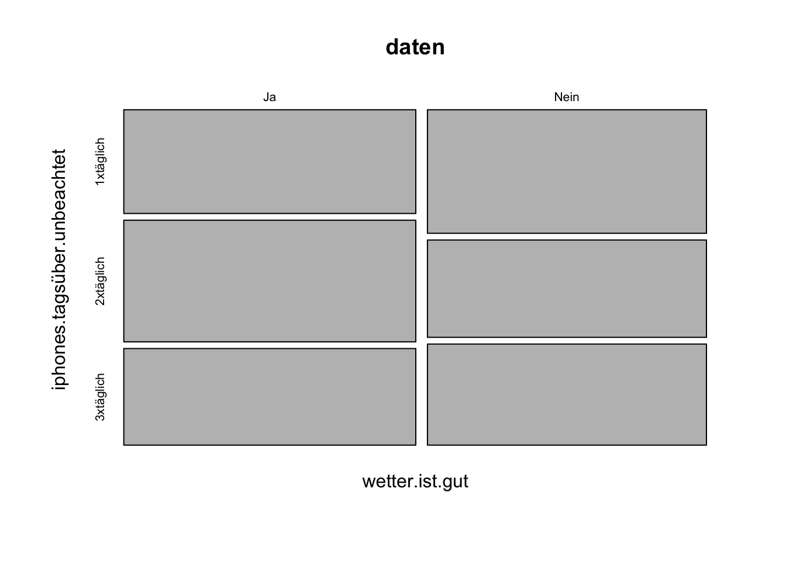
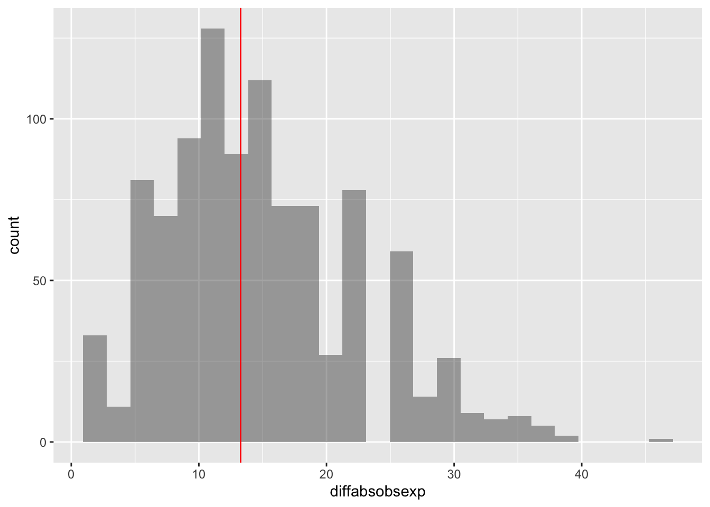
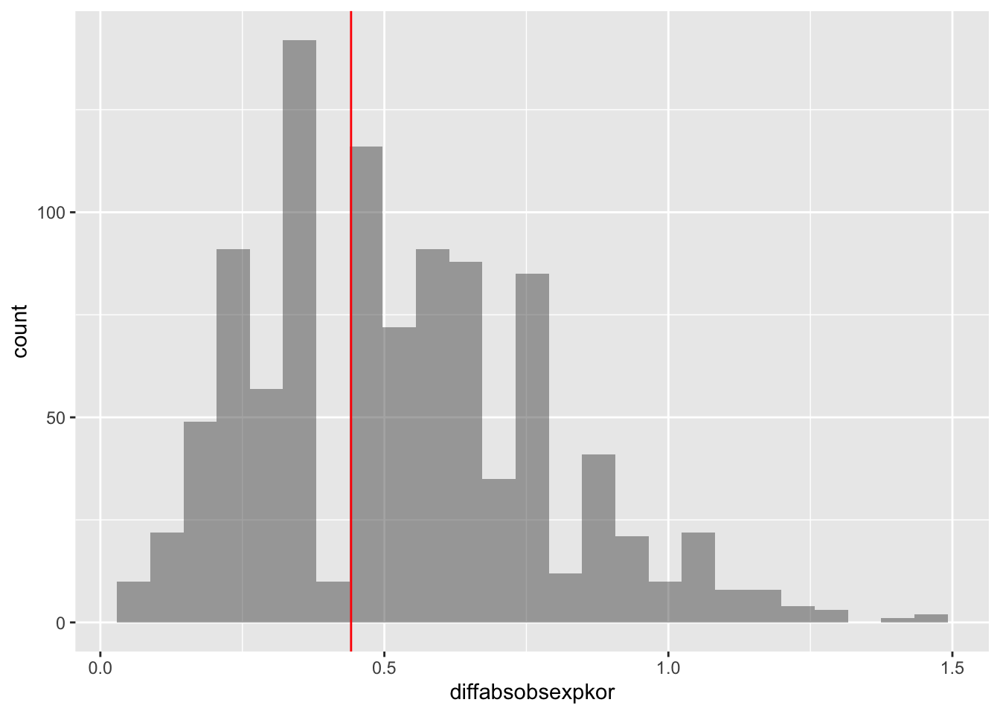
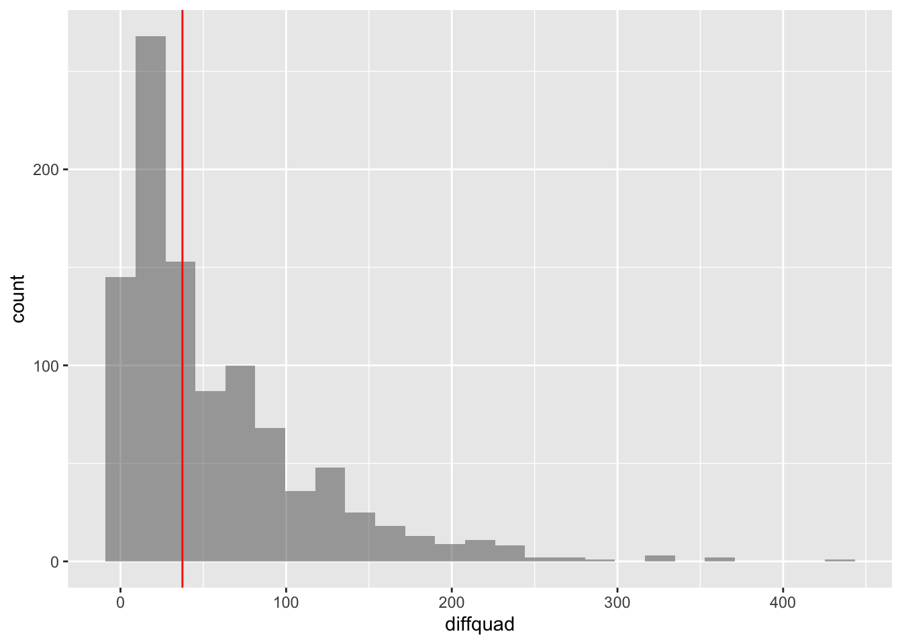
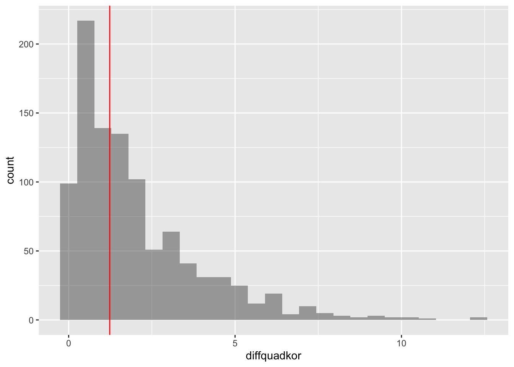

Eine typische Frage von Studierenden
Vor kurzem fand ich mal wieder eine Anfrage einer Studierenden in meinem Email Postfach. Die Frage lautete in etwa wie folgt:
Guten Tag Herr Markgraf,
ich würde gerne die Hypothese untersuchen: Die reduzierte Abhängigkeit des Iphones tagsüber liegt am schönen Wetter. Dazu habe ich eine Variable “iphones.tagsüber.unbeachtet” mit 1x, 2x und 3x täglich als Ausprägungen und eine andere Variable “wetter.ist.gut”, die als Ausprägung “Ja” und “Nein” hat. Welchen Test kann ich dazu zur Überprüfung einer Abhängigkeit nehmen?
Vielen Dank im Voraus.
MfG Monika Mustermann
Natürlich ist diese Frage im Prinzip einfach zu beantworten, sogar von Leuten, die Statistik an einer Hochschule gehört haben. – Aber da ich ja auch sonst nichts zu tun habe gebe ich gerne statistische Hilfestellung für Studierende. Sicher verdiene ich damit eigentlich Geld, also ist es nur natürlich, dass ich so etwas volllkommen unendgeldlich mache. Und wieso sollten Studierende einfach mal ein Buch in die Hand nehmen und selber nachdenken? Es gibt vermutlich keine Bücher zu diesem Thema, denn es ist gar sicher eine Geheimwissenschaft. Und wieso sollte man dann also seine Betreuungsperson zu diesem Probem fragen? – Egal.
Was haben wir hier vorliegen? – Im einfachsten Fall sind es zwei kategoriale Variablen und wir wollen sehen ob diese von einenander (un-)Abhängig sind. Mangels tatsächlicher Daten basten wir uns einfach mal ein Beispiel:
Wir basten uns ein Beispiel
library(mosaic)
set.seed(123)
n = 176
daten <- data.frame(
iphones.tagsüber.unbeachtet = sample(rep(c("1xtäglich","2xtäglich","3xtäglich"),n),n),
wetter.ist.gut = sample(rep(c("Ja","Nein"),n),n)
)
head(daten)
## iphones.tagsüber.unbeachtet wetter.ist.gut
## 1 1xtäglich Ja
## 2 1xtäglich Nein
## 3 2xtäglich Ja
## 4 3xtäglich Nein
## 5 1xtäglich Ja
## 6 2xtäglich Ja
Ein Blick auf Kennzahlen und Visualisierungsmöglichkeiten
Man kann diese Daten als Kreuztabelle zusammenfassen und diese dann mit Hilfe eines Mosaicplots darstellen:
tally(iphones.tagsüber.unbeachtet ~ wetter.ist.gut, data=daten)
## wetter.ist.gut
## iphones.tagsüber.unbeachtet Ja Nein
## 1xtäglich 29 33
## 2xtäglich 34 26
## 3xtäglich 27 27
mosaicplot(wetter.ist.gut ~ iphones.tagsüber.unbeachtet, data=daten)

Von der Forschungsthese zur Hypothese (Teil 1)
Um nun zwischen abhänig und unabhängig statitisch zu unterscheiden, sollte man sich die Null- und Alternativhypothese genau überlegen und operationalisieren.
Ein Blick auf die (orginal) Forschungsthese: “Die reduzierte Abhängigkeit des Iphones tagsüber liegt am schönen Wetter.”
Okay, wir formulieren etwas um: “Es besteht ein Zusammenhang zwischen ‘schönem Wetter’ und dem ‘Iphone tagsüber unbeachtet’ lassen.”
Warum diese unterschiedliche Formulierung? – Nun, in der orginal Forschungsthese wird ein kausal Zusammenhang geprüft. Da es sich vermutlich um eine Beobachtungstudie handelt können wir einen solchen Ursache-Wirkungs-Zusammenhang aber hier nicht so einfach (bis gar nicht) prüfen. Zwar kann man von außen sagen: “Wenn es einen Zusammenhang gibt, dann führt das schöne Wetter zur Nichtbeachtung.” statitisch können wir hier aber aktuell nur den Zusammenhang (und zwar ungerichtget!) testen. Liegt dieser nicht vor, so spricht erstmal auch nichts für einen kausalen Zusammenhang, aber ein Zusammenhang an sich spricht noch nicht für einen kausalen Zusammenhang!
Aus der umformulierten Forschungsfrage können wir die Alternativ- und auch die Nullhypothese ableiten:
Alternativhypothese: Es besteht ein Zusammenhang zwischen ‘schönem Wetter’ und dem ‘Iphone tagsüber unbeachtet’ lassen.
Nullhypothese: Es besteht kein Zusammenhang zwischen ‘schönem Wetter’ und dem ‘Iphone tagsüber unbeachtet’ lassen.
Wie kann man nun den Zusammenhang messen und wie sieht kein Zusammenhang dabei aus?
Um zu sehen ob unsere Werte keinen Zusammenhang haben, also rein zufällig sind, oder es einen inneren Zusammenhang gibt müssen wir die äußeren von den inneren Häufigkeiten trennen.
Konkret heißt das, wir schauen uns an wie die Häufigkeiten oder auch Verteilung der einzelnen Variabeln ausssehen:
tally(~ wetter.ist.gut, data=daten)
## wetter.ist.gut
## Ja Nein
## 90 86
tally(~ iphones.tagsüber.unbeachtet, data=daten)
## iphones.tagsüber.unbeachtet
## 1xtäglich 2xtäglich 3xtäglich
## 62 60 54
Freiheitsgrade
Die Werte innerhalb der Kreuztabelle oben werden im wesendlichen durch diese Werte bestimmt. Die außeren Werte sind also unsere Rahmenbedingungen. Dabei ist der Einfluss der sogenannten Randhäufigkeiten (Marginale Häufigkeit) nicht zu unterschätzen. Denn wenn wir diese als fix/gegeben ansehen, können wir nur mit den sechs Werten in der Mitte unserer Kreuztabelle spielen
Doch sind nicht alle sechs Werte wirklich frei. Denn um zum Beispiel die Summe 62 in der ersten Zeile zu erhalten haben wir ja die Summe von 29 und 33 gebildet.
Ist nun der Rand, also 62, fest, so kann ich die beiden Summanden nicht mehr frei wählen, denn
$$62 = 29 + 33$$
impliziert ja, dass ich allgemeiner
$$62 = x + y$$
habe und somit durch
$$x = 62 - y \qquad\text{ bzw. }\qquad y = 62 - x$$
immer nur eine der Variabeln \(x\) oder \(y\) wirklich frei zu wählen ist.
Da dies für jede Zeile, aber auch für jede Spalte gilt, denn z.B. ist die Summe der ersten Spalte gegeben durch
$$90 = 29 + 34 + 27,$$
sind von den sechs Werten in der Kreuztabelle in der Tat nur 2 Werte wirklich frei zu wählen.
Wir haben also ein Problem mit 2 Freiheitsgraden, man schreibt das kurz mit \(df=2\) (df steht dabei für degree of freedom).
Unabhängigkeit in der Statistik
Wir sagen in der Statistik, dass ein gemeinsames Ereignis unabhängig ist wenn sich das Ereignis als Produkt der beiden Einzelereignisse berechnen lässt.
Seien \(A\) und \(B\) also zwei Ereignisse, dann gilt im Falle der Unabhängigkeit:
$$P(A \cap B) = P(A) \cdot P(B)$$
Wir können diese Definition aus der Wahrscheinlichkeitstheorie an unser Problem adaptieren, in dem wir die Wahrscheinlichkeiten durch die relativen Häufigkeiten ersetzen.
Der Wert für das Ereignis “iphone.tagsüber.unbeachtet = 1xtäglich und daswetter.ist.gut=ja` wird im Falle der Unabhägigkeit
durch die beiden Randhäufigkeiten bestimmt:
$$62 \cdot 90 = 31.7045455$$
Wir können nun also eine Kreuztabelle erstellen, wie sie seien müsste, falls wir tatsächlich statitische Unabhängigkeit hätten. Wir nutzen dafür eine sehr allgemein gehaltene Funktion expectation.tab(), der wir eine Tabelle mit den Häufigkeiten der Beobachtungen geben und die uns dann die Tabelle liefert, wie sie aussehen würde, falls tatsächlich statitische Unabhängigkeit heschen würde.
Die Tabelle mit den beobchteten Werten speichern wir in obs.tab, die der erwarteten Werte in exp.tab:
expectation.tab <- function(tab.obs) {
max.i <- length(tab.obs[1,])
max.j <- length(tab.obs[,1])
# Randhäufigkeiten
x <- rep(0, max.i)
for(i in 0:max.i) x[i] = sum(tab.obs[,i])
y <- rep(0, max.j)
for(j in 0:max.j) y[j] = sum(tab.obs[j,])
# Anzahl aller Beobachtungen
n = sum(tab.obs)
mtx <- c()
for(i in 0:max.i){
for(j in 0:max.j) {
mtx <- c(mtx, (x[i] * y[j] / n))
}
}
ret <- matrix(
mtx,#rep(0, length(tab.obs)),
nrow = max.j,
ncol = max.i
)
# Spalten und Zeilennamen übernehmen
colnames(ret) <- colnames(tab.obs)
rownames(ret) <- rownames(tab.obs)
return(ret)
}
obs.tab <- tally(iphones.tagsüber.unbeachtet ~ wetter.ist.gut, data=daten)
exp.tab <- expectation.tab(obs.tab)
Schauen wir uns die beiden Tabellen kurz an. Zuerst die der beobachteten Werte:
obs.tab
## wetter.ist.gut
## iphones.tagsüber.unbeachtet Ja Nein
## 1xtäglich 29 33
## 2xtäglich 34 26
## 3xtäglich 27 27
Dann die der erwarteten Werte:
exp.tab
## Ja Nein
## 1xtäglich 31.70455 30.29545
## 2xtäglich 30.68182 29.31818
## 3xtäglich 27.61364 26.38636
Was können wir nun messen?
Unsicherheit und Zufall spielen eine große Rolle. Wir können also nicht erwarten, dass die Werte für die Kreuztabelle in der Realität genau getroffen werden. (Vorallem, weil wir hier ja mit Nachkommastellen arbeiten!) Aber wir können versuchen den Abstand zu diesen Werten zu messen. Je weiter weg die Werte in der Kreuztabelle von den theoretischen Werten liegen, um so unwarscheinlicher ist es, dass die Werte zufällig aus einer unabhängigen Population gezogen wurden. D.h. wir könnten uns für eine Abhägigkeit aussprechen.
Messen mit dem Absolutabstand?
Man könnte nun auf die Idee kommen die Abstände an jeder Stelle zu messen und den absoluten Abstand zu summieren:
sum(abs(obs.tab-exp.tab))
## [1] 13.27273
Nur was sagt dieser Wert aus? – Ist das ein kleiner Abstand oder ein großer?
Wir brauchen Referenzwerte zur Orientierung. Die Idee: Permutationstest
# Funktion zur Berechnung der absoluten Differenz zwischen
# beobachteten und erwarteten Werte
diffabsobsexp <- function(obs, exp) {
return(sum(abs(obs-exp)))
}
# Absolute Abweichung der gemessenen Werte
obs.abs <- diffabsobsexp(obs.tab, exp.tab)
# Erzeugen der Nullverteilung
NullVert <- do(1000) * diffabsobsexp(tally(iphones.tagsüber.unbeachtet ~ shuffle(wetter.ist.gut), data=daten), exp.tab)
gf_histogram(~ diffabsobsexp, data=NullVert) %>%
gf_vline(xintercept = ~ obs.abs, color="red")

Wir können nun den p-Wert abschätzen mit:
prop( ~ diffabsobsexp >= obs.abs, data=NullVert)
## prop_TRUE
## 0.559
Doch haben wir alle Werte richtig bewertet? Wenn wir jeden einzelne Differenz noch durch den erwarteten Wert teilen erhalten wir:
# Funktion zur Berechnung der korrigierten absoluten
# Differenz zwischen beobachteten und erwarteten Werten
diffabsobsexpkor <- function(obs, exp) {
return(sum((abs(obs-exp))/exp))
}
# Absolute Abweichung der gemessenen Werte -- korrigiert
obs.abs <- diffabsobsexpkor(obs.tab, exp.tab)
# Erzeugen der Nullverteilung
NullVert <- do(1000) * diffabsobsexpkor(tally(iphones.tagsüber.unbeachtet ~ shuffle(wetter.ist.gut), data=daten), exp.tab)
gf_histogram(~ diffabsobsexpkor, data=NullVert) %>%
gf_vline(xintercept = ~ obs.abs, color="red")

Wir können nun den p-Wert abschätzen mit:
prop( ~ diffabsobsexpkor >= obs.abs, data=NullVert)
## prop_TRUE
## 0.619
Ist der absolute Abstand überhaupt gut gewählt? – Wäre nicht eher der quadratische Abstand angebracht?
# Funktion zur Berechnung der quadratischen
# Differenz zwischen beobachteten und erwarteten Werten
diffquad <- function(obs, exp) {
return(sum((obs-exp)^2))
}
# Quadratische Abweichung der gemessenen Werte
obs.abs <- diffquad(obs.tab, exp.tab)
# Erzeugen der Nullverteilung
NullVert <- do(1000) * diffquad(tally(iphones.tagsüber.unbeachtet ~ shuffle(wetter.ist.gut), data=daten), exp.tab)
gf_histogram(~ diffquad, data=NullVert) %>%
gf_vline(xintercept = ~ obs.abs, color="red")
 Wir können nun den p-Wert abschätzen mit:
prop( ~ diffquad >= obs.abs, data=NullVert)
## prop_TRUE
## 0.52
Wenn man nun den quadratischen Abstand noch durch die Erwartung teilt:
# Funktion zur Berechnung der korrigierten quadratischen
# Differenz zwischen beobachteten und erwarteten Werten
diffquadkor <- function(obs, exp) {
return(sum(((obs-exp)^2)/exp))
}
# Quadratische Abweichung der gemessenen Werte -- korrigiert
obs.abs <- diffquadkor(obs.tab, exp.tab)
# Erzeugen der Nullverteilung
NullVert <- do(1000) * diffquadkor(tally(iphones.tagsüber.unbeachtet ~ shuffle(wetter.ist.gut), data=daten), exp.tab)
gf_histogram(~ diffquadkor, data=NullVert) %>%
gf_vline(xintercept = ~ obs.abs, color="red")
 Wir können nun den p-Wert abschätzen mit:
prop( ~ diffquadkor >= obs.abs, data=NullVert)
## prop_TRUE
## 0.571
An Hand der p-Werte können wir nun über die Nullhypothese entscheiden:
Was sagt die klassische Statistik?
In der klassischen Statistik könnte man hier den \(\chi^2\)-Unabhängigkeitstest anwenden:
xchisq.test(iphones.tagsüber.unbeachtet ~ wetter.ist.gut, data=daten)
##
## Pearson's Chi-squared test
##
## data: x
## X-squared = 1.2345, df = 2, p-value = 0.5394
##
## 29 33
## (31.70) (30.30)
## [0.231] [0.241]
## <-0.48> < 0.49>
##
## 34 26
## (30.68) (29.32)
## [0.359] [0.376]
## < 0.60> <-0.61>
##
## 27 27
## (27.61) (26.39)
## [0.014] [0.014]
## <-0.12> < 0.12>
##
## key:
## observed
## (expected)
## [contribution to X-squared]
## <Pearson residual>
Aber es gibt auch den (exakten) Fisher-Test:
fisher.test(obs.tab, alternative = "greater")
##
## Fisher's Exact Test for Count Data
##
## data: obs.tab
## p-value = 0.5609
## alternative hypothesis: greater
Fazit
Wir können die p-Werte der einzelnen Tests nun gegenüber stellen:
## abs. Abweichung kor. abs. Abweichung quadr. Abweichung
## 0.5590000 0.6190000 0.5200000
## kor. quadr. Abweichung ChiQuadrat-Test Fisher-Test
## 0.5710000 0.5394367 0.5609340
Was die Entscheidung für oder gegen die Nullhypothese angeht, hat jeder dieser Test (in der Regel) die selbe Entscheidung als Konsequenz.
Norman Markgraf
Diplom-Mathematiker
Norman Markgraf ist freiberuflicher Dozent für Mathematik, Statistik und Informatik, sowie freiberuflicher Programmierer.